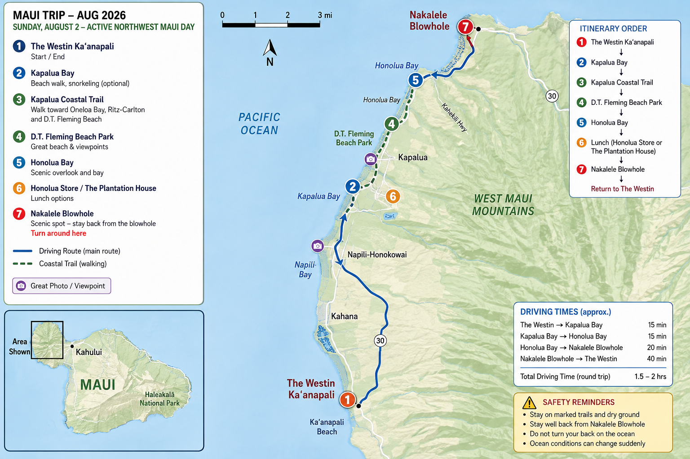
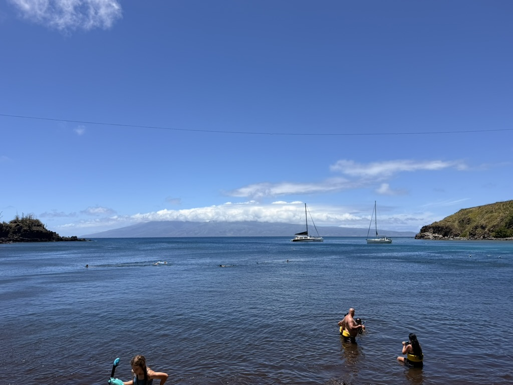
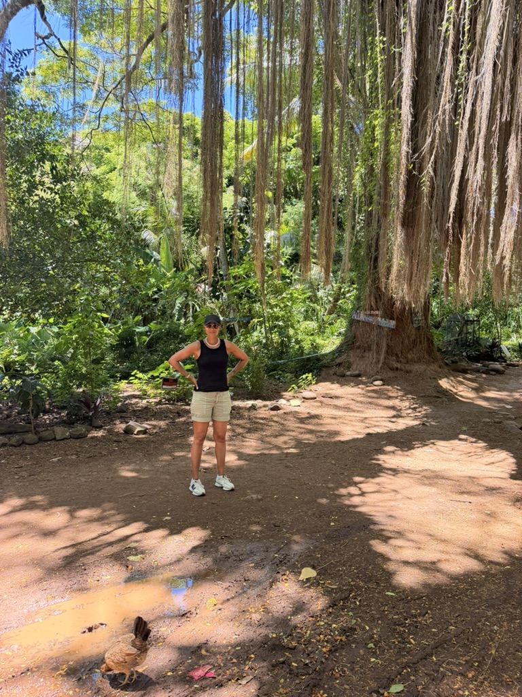
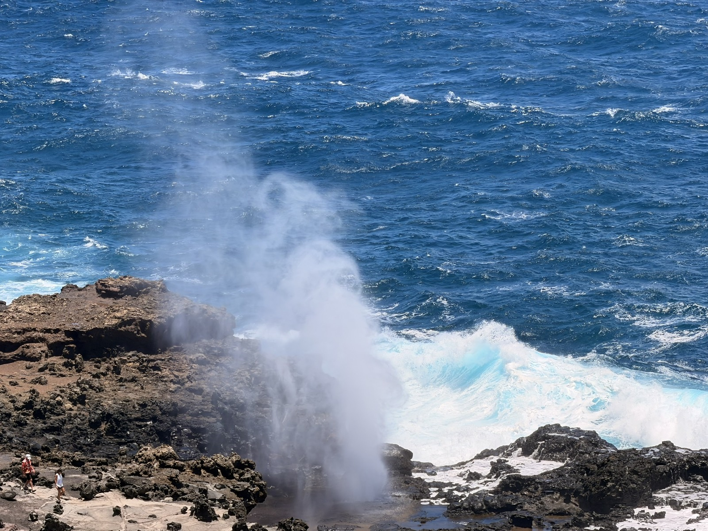
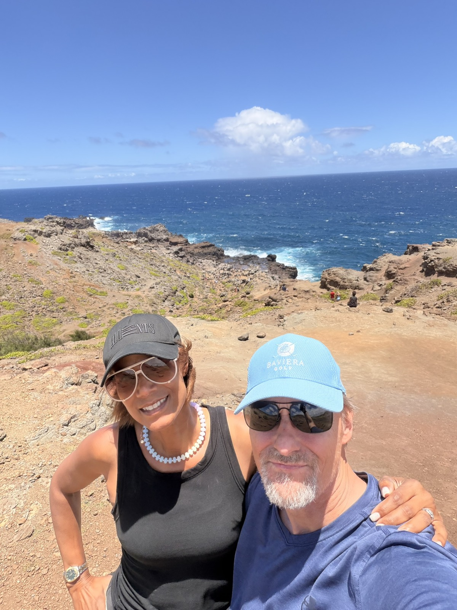
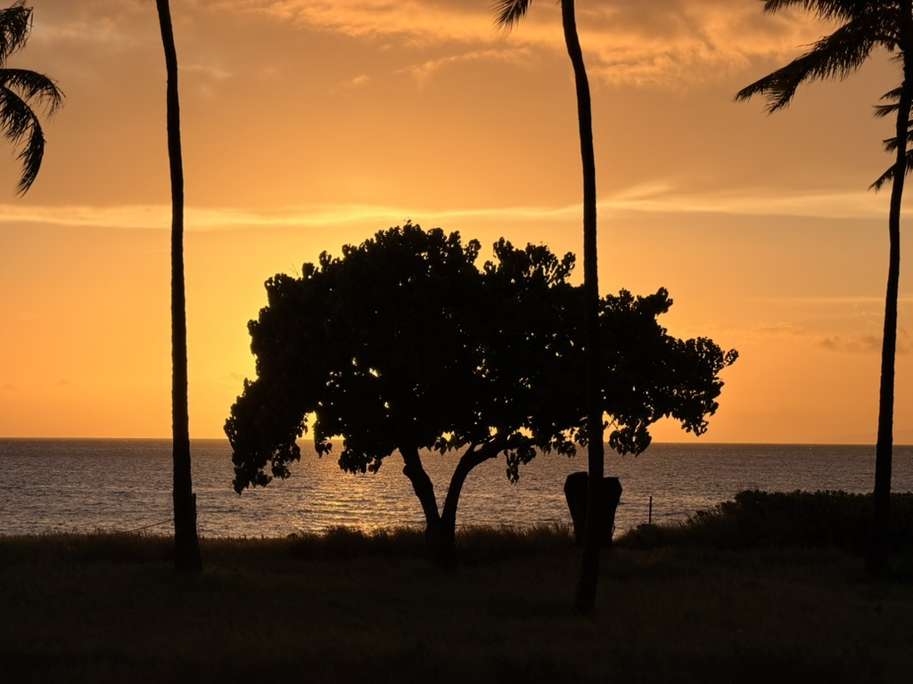

Actual workout
Kapalua Coastal Trail & Dragon’s Teeth
3.41miles
758 ftelevation gain
1:31moving time
2:22elapsed
505active calories
Coastal trail, beaches, forest and blowhole · Back at the Westin around 2:20 PM
Actual workout
Completed
Completed · Sunday dinner
We sat at the bar, where the bartender was friendly and knowledgeable.
Renee had the daily special nero pasta with black truffle, and I had the daily special pizza with meatballs. Both were absolutely fantastic.
Verdict: Not cheap, but a very nice treat.
Directions to Sale PepeOne tap away
Use individual legs instead of one giant route. It is easier when parking is full or you skip a stop.

Trail notes
Parking: Kapalua Bay public parking.
Walk: Kapalua Bay → Oneloa Bay → Dragon's Teeth → D.T. Fleming.
Distance: Up to about 3.5 miles round trip. Turn around whenever ready.
Personal recommendation: This was a great hike. We stopped at Oneloa Beach; it was windy, but there was barely anyone there.
Open parking in MapsOpen shared hike routeParking: Small public area near Office Road.
Walk: About 0.4 mile each way. Uneven and exposed near the lava formations.
Current note: The golf course is closed. Stay away from wet rocks and cliff edges.
Open parking in MapsParking: Roadside only. Pull completely off the highway and obey signs.
Options: Quick overlook or short shaded forest walk to the bay.
Open lookout in MapsParking: Dirt pullout near mile marker 38.5.
Walk: Rough, rocky, exposed; about 45–75 minutes.
Safety: Stay uphill, on dry rock, and far from the opening. Never turn your back on the ocean.
Open parking in MapsCompleted · Aug 3
Walked north from the Westin to Honokowai Marketplace for coffee and breakfast at Java Jazz, then returned along the coast.
Morning walk completed from 6:49–8:19 AM. The rest of the day remains flexible for the beach, pool, snorkeling, paddleboard or kayak.
Walking directions to Java JazzAug 4
5:00–7:00 PM · 2 adults
Arrive by 4:30 PM. Check in at the Aqualani Beach Activities Kiosk, oceanside of the Outrigger Kaʻanapali Beach Resort, 2525 Kaʻanapali Parkway.
Aug 5
Check out 10:00 AM, store luggage, use resort facilities, leave around 5:00–5:30 PM, return rental car around 7:30 PM, UA1750 departs OGG at 9:55 PM.
Directions to OGG AirportTrip memories





Trip resources
Keep handy
Works like an app
Install from Safari so the itinerary is one tap away and available offline after your first visit.
Open this page in Safari.
Tap the Share button.
Scroll down and tap Add to Home Screen.
Turn on Open as Web App, then tap Add.
Open it once while online. The status at the top will say Ready offline.
Apple Maps is separate: Download the West Maui offline map in Apple Maps before leaving.
{kind=link}
{kind=link}
{kind=link}
{kind=link}
{kind=link}
{kind=link}
{kind=link}
{kind=link}
{kind=link}
{kind=link}
{kind=link}